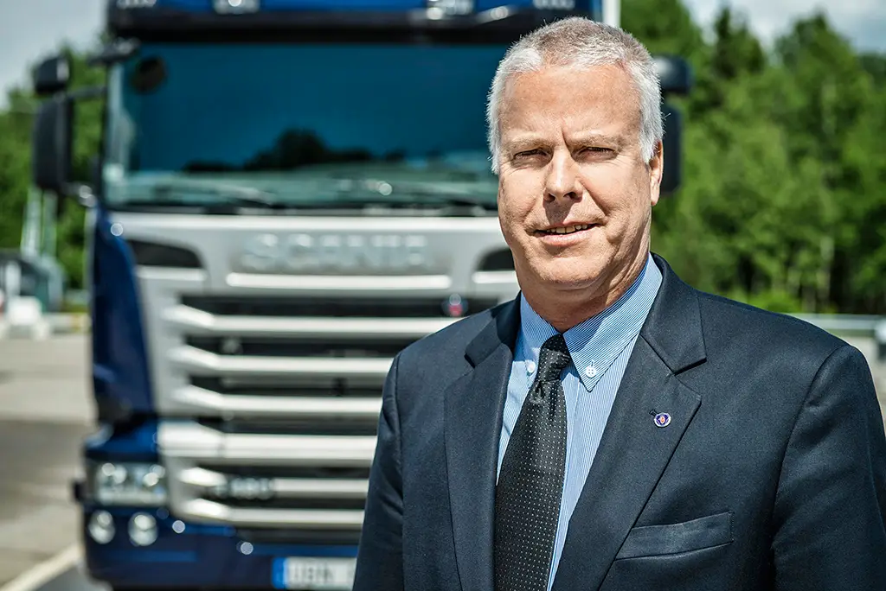

MANIFESTO SCANIA 2022
Quem transporta com compromisso, transforma o mundo com atitudes. Porque quando você dirige um Scania, dirige em direção ao futuro, e sustentar o futuro é o nosso propósito!

"A Scania chegou, em 2021, aos 130 anos de estrada nutrindo valores e envolvendo seus públicos-alvo – dentro ou fora de casa – em sólidos valores e princípios. Porém, se existe um tema onde o passado não garante o futuro e impõe atenção especial ao presente, esse é a integridade.
Somos uma empresa publicamente comprometida com a sustentabilidade ou, para usar uma tradução mais atual, com o acrônimo em inglês ESG - Environmental, Social and Governance. Cada dia estamos mais expostos à transparência e à exigência irretocável sobre a nossa conduta e esta é uma ótima oportunidade para entender – colaboradores, lideranças, clientes, parceiros de negócios e sociedade – uma condição onde todos ganham, porque um mundo mais resiliente e justo começa com senso e atitude éticas.
Na Scania revisitamos constantemente este assunto, não apenas como ‘regra’ escrita em páginas de Políticas - que existem e são necessárias, mas como forma objetiva de fazer negócios e de viver. Aqui não há como separar o pessoal do profissional, ética é postura universal e holística do ser humano. Atuamos de maneira correta por convicção, por ser uma verdade de nossa marca e de nossas pessoas.
Nesta jornada não estamos sozinhos e contamos com rotinas, processos e sistemas, que nos apoiam no dia a dia. Incentivamos constantemente uma cultura aberta, que permite a troca norteada pela transparência. Sabemos que para fazer negócios não há caminho fácil, mas há o caminho certo. Sem atalhos. Este é que queremos, escolhemos e estaremos sempre seguindo."
Christopher Podgorski | Presidente e CEO da Scania Latin America